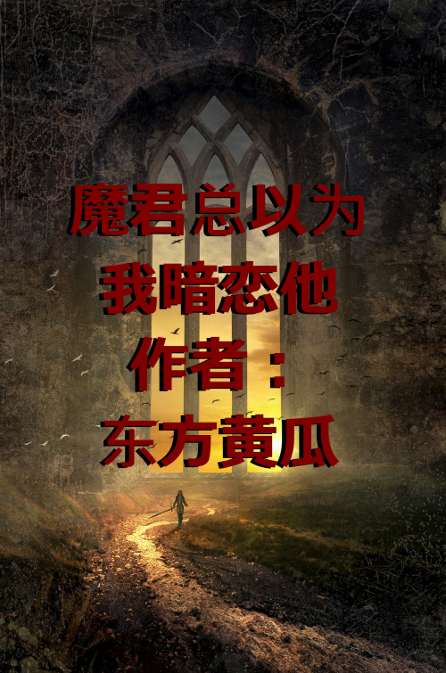

Bai Yang es el hijo menor de una familia rica que creció mimado, poco ambicioso y sin que nadie esperara nada de él. Sin embargo, esto realmente no le importa, porque todavía puede vivir una vida sencilla y feliz.
Un día, sin embargo, su hermano mayor sufrió un accidente y ahora está en coma. El padre de Bai Yang ahora tiene que considerar a su hijo menor para hacerse cargo del negocio familiar. Desafortunadamente para él, Bai Yang es un niño débil, tímido y cobarde. ¿Cómo podrá alguna vez tener éxito?
Queriendo cambiar la personalidad de su hijo, el padre hace transmigrar a Bai Yang al mundo de Wild Wind, una novela de fantasía muy famosa. El padre de Bai Yang espera que el entorno de ese mundo haga que su hijo sea más arrogante y dominante, como debería serlo un hijo de una familia rica.
Sin embargo, debido a un error con el Sistema Principal, en lugar de transmigrar como protagonista, Bai Yang termina convirtiéndose en un villano carne de cañón, Xie Zietian, del Reino de los Demonios. Para regresar de forma segura y rápida a su mundo, Bai Yang debe asegurarse de que el protagonista, Zhou Ying, ascienda a los cielos para que su misión de transmigración se complete.
Para colarse en el reino humano y ayudar a Zhou Ying, a Bai Yang se le ocurren una variedad de excusas para el Rey Demonio de la Noche Eterna, como...
Bai Yang, de manera digna: “Su Majestad, esa persona podría amenazar al mundo de los demonios. ¡Fui al mundo humano a matarlo por ti! (En realidad, fui allí para encontrarme con el protagonista).
Bai Yang, proclamando su lealtad: “Su Majestad, aguante. ¡Iré al mundo humano a buscar el elixir para ti! (En realidad, fui allí para salvar al protagonista).
Bai Yang, con una actitud de dedicación desinteresada: "¡Su Majestad, sólo quiero ir al mundo humano para promover su gran causa!" (En realidad, fui allí para ver al protagonista).
El rostro del Rey Demonio permaneció impasible pero, de hecho, las puntas de sus orejas estaban rojas. Estaba pensando: No puedo creer que me ame tan profundamente...
Rey Demonio: “¡Hmph! Viendo lo pegajoso que eres, aceptaré tu amor. ¡Dime! ¡Lo que sea que necesites, te lo daré!
Bai Yang: “¡Mierda! Su Majestad, no la amo”.
Rey Demonio: "No, me amas".
El Rey Demonio realmente creyó en Bai Yang y compartió un profundo amor mutuo hasta que descubrió que Bai Yang estaba teniendo una "aventura" con un "humano salvaje"...